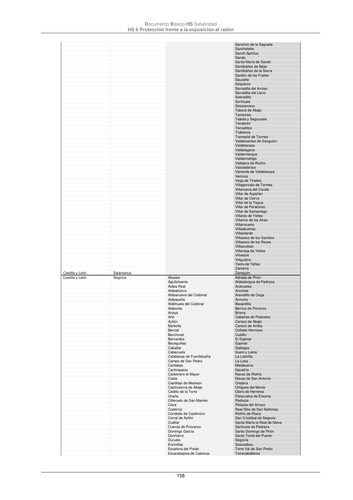

DB-HS Salubridad · edición 2022-06-14 · capa oficial
Documento DB-HS-oficial · SHA-256 del PDF 68df3caacc95f71aee2ec1ba7b2c65ae66155c21e3a8785521b8fdd4fd640d3b
Página física 158 de 184.
Copia fiel del PDF fuente · Fuente oficial
Ficha de la disposición en la fuente oficial
Formato: Texto de la página (Markdown)
Documento Básico HS Salubridad HS 6 Protección frente a la exposición al radón 158 Sanchón de la Sagrada Sanchotello Sancti-Spíritus Sando Santa María de Sando Santibáñez de Béjar Santibáñez de la Sierra Sardón de los Frailes Saucelle Sequeros Serradilla del Arroyo Serradilla del Llano Sobradillo Sorihuela Sotoserrano Tabera de Abajo Tamames Tejeda y Segoyuela Tenebrón Terradillos Trabanca Tremedal de Tormes Valdefuentes de Sangusín Valdelacasa Valdelageve Valdemierque Valderrodrigo Vallejera de Riofrío Valsalabroso Valverde de Valdelacasa Vecinos Vega de Tirados Villagonzalo de Tormes Villanueva del Conde Villar de Argañán Villar de Ciervo Villar de la Yegua Villar de Peralonso Villar de Samaniego Villares de Yeltes Villarino de los Aires Villarmuerto Villasbuenas Villasdardo Villaseco de los Gamitos Villaseco de los Reyes Villasrubias Villavieja de Yeltes Vilvestre Vitigudino Yecla de Yeltes Zamarra Castilla y León Salamanca Zamayón Castilla y León Segovia Abades Adrada de Pirón Aguilafuente Aldealengua de Pedraza Aldea Real Arahuetes Aldealcorvo Arcones Aldeanueva del Codonal Arevalillo de Cega Aldeasoña Armuña Aldehuela del Codonal Basardilla Aldeonte Bernuy de Porreros Anaya Brieva Añe Cabañas de Polendos Ayllón Cerezo de Abajo Barbolla Cerezo de Arriba Bercial Collado Hermoso Bercimuel Cubillo Bernardos El Espinar Boceguillas Espirdo Caballar Gallegos Cabezuela Ituero y Lama Calabazas de Fuentidueña La Lastrilla Campo de San Pedro La Losa Cantalejo Matabuena Cantimpalos Navafría Carbonero el Mayor Navas de Riofrío Casla Navas de San Antonio Castillejo de Mesleón Orejana Castroserna de Abajo Ortigosa del Monte Cedillo de la Torre Otero de Herreros Chañe Palazuelos de Eresma Cilleruelo de San Mamés Pedraza Coca Pelayos del Arroyo Codorniz Real Sitio de San Ildefonso Condado de Castilnovo Riofrío de Riaza Corral de Ayllón San Cristóbal de Segovia Cuéllar Santa María la Real de Nieva Cuevas de Provanco Santiuste de Pedraza Domingo García Santo Domingo de Pirón Donhierro Santo Tomé del Puerto Duruelo Segovia Encinillas Sotosalbos Escalona del Prado Torre Val de San Pedro Escarabajosa de Cabezas Torrecaballeros

Datos candidatos: compruebe celdas y notas en el PDF.